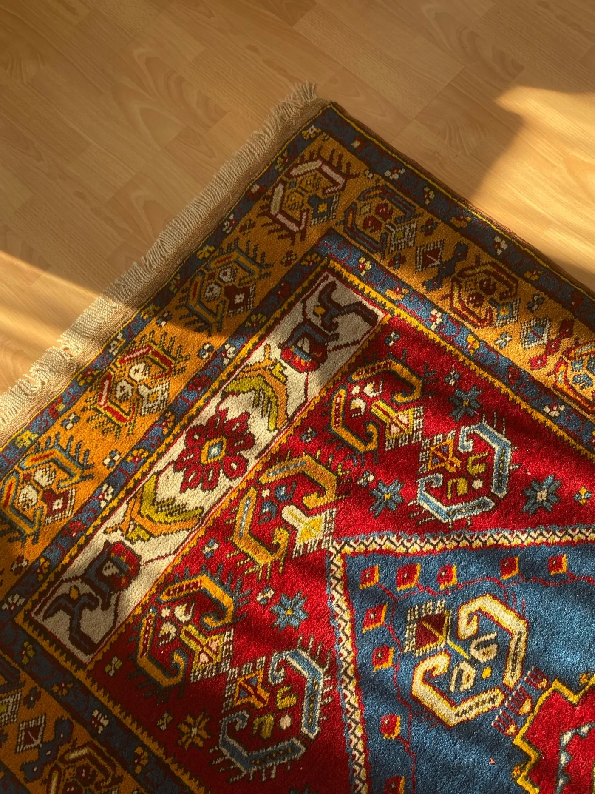
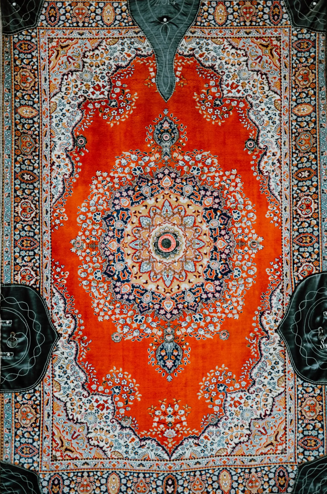
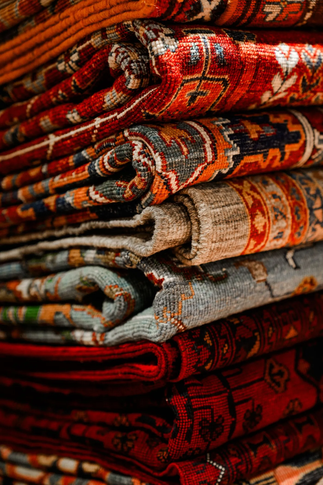

SampleArda No. 01 €1,240*
Wool to verify · 190 × 280 cm · Record 001
A precise, curatorial catalog where every piece is easy to compare. Paper tones, hard rules, and restrained metadata make the product—not interface decoration—the visual event.

SampleWool to verify · 190 × 280 cm · Record 001

SampleFiber to verify · 160 × 240 cm · Record 002
 Sample
Sample
Material to verify · 200 × 300 cm · Record 003
 Sample
Sample
Material to verify · 180 × 270 cm · Record 004
This direction is strongest for a broad catalog: stable crops, dimensions, material, price, and availability can be scanned without losing an editorial point of view. All current values are placeholders.
